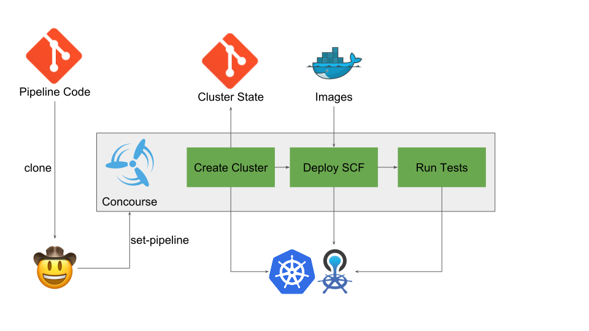

Zero to CF in
30 Seconds
Akshay Mankar, Steffen Uhlig
Who we are
- Steffen Uhlig
- IBM
#eirini, #ruby, previously
#bits-service
- Akshay Mankar
- Pivotal
#eirini, #haskell, previously
#cfcr
30 Seconds to CF?
- We cheated a bit
- 30 seconds is for typing
set-pipeline
- It’s more like 15 minutes
This is for you if:
You are …
- test-driving CF (different versions maybe?)
- building on top of CF (e.g. a tool)
- developing a CF component
Big Idea
minikube : kube :: this : CF
Demo
Dev speed
- Quickly spin up a dev environment
- Fast onboarding of new team members
- Less fear
=> broke it? N.P.!
It’s lightweight
- Keep your laptop clean
- no need to run CF locally
- your version / patch level on someone else’s hardware
- Cookie-cutter approach
- Test environments by the dozen
- Pets vs. cattle
Repeatable
- Yields repeatable dev environments
- Ship the config, not the cluster
How does it work?
- SCF + fissile
- Eirini
- Kubernetes
- Helm
- Concourse

No need to see the YAML
set-pipeline
- the only manual step
- takes the name of “the world”
I need another CF
- Before:
- Install VirtualBox
- Install
bosh (lite)
- Deploy
- Wait
goto 4
- Now:
I broke my dev env
- Before:
- Debug
- Troubleshoot
- Give up
- Find the docs how to re-create
- Now:
- Press the recreate button in Concourse
Ideas
- Notification?
- Print details at the end of set-pipeline?
- Your ideas?
Score Card
Did we achieve our goals? …
- Getting a new env is very straighforward: ✅
- Repeatability: ✅
- Speed == 30s: ❌
- Speed <= 30mins: ✅
Thanks!
@AkshayMankar
@suhlig
https://suhlig.github.io/zero-to-cf-in-30-seconds